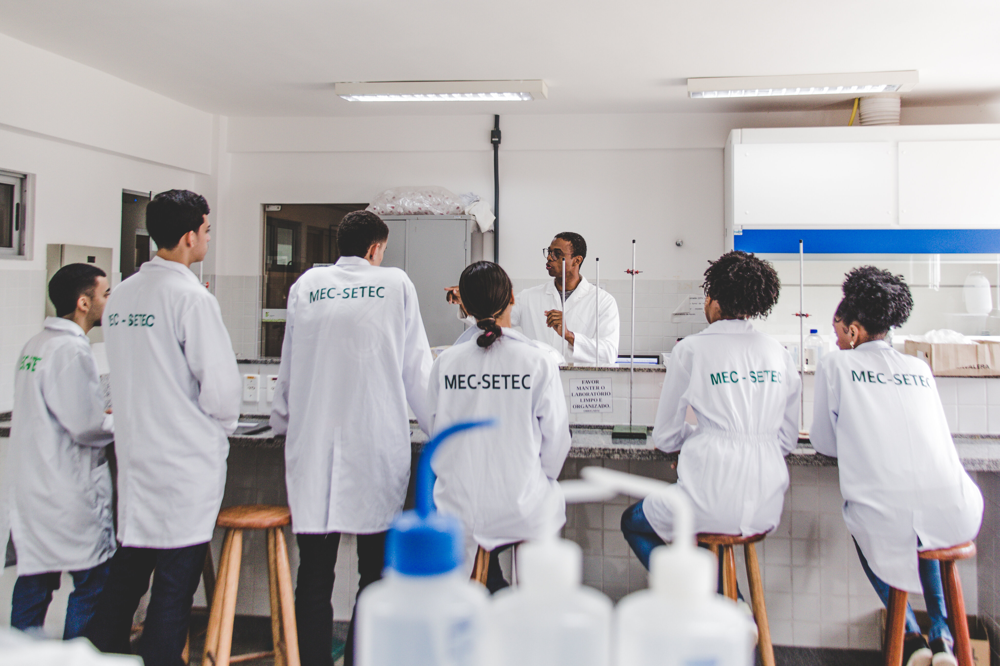

Capítulo 4
O planejamento estratégico como estruturante da gestão integral

No capítulo anterior, discutimos a gestão escolar na perspectiva politécnica, estruturada em três eixos centrais: currículo integrado, participação popular sob uma auto-organização e a relação indissociável entre ensino, pesquisa e extensão. Com base no conceito de formação humana integral, visamos a estrutura de uma gestão integral da Educação Profissional e Tecnológica (EPT) à luz das relações entre os eixos do trabalho, da ciência e da cultura.
Neste capítulo, vamos analisar uma visão possível para o planejamento, localizando-a no quadro teórico da gestão integral. Trataremos do planejamento escolar e de suas especificidades, recorrendo a discussões sobre o processo de trabalho capitalista e sobre a organização do trabalho pedagógico na EPT integral e integrada. Essas duas questões conduzem a uma reflexão sobre a construção de um planejamento preocupado com o projeto de profissionalização da educação politécnica, e nos levam a mobilizar o conceito de planejamento estratégico.
A partir dessas observações iniciais, busca-se responder às seguintes questões:
1) De que forma a organização do trabalho pedagógico da EPT integral e integrada abarca o projeto de profissionalização dos estudantes?
2) É possível conceber um tipo específico de planejamento escolar, relativo à EPT integral e integrada, ou as grandes teorias sobre o planejamento são suficientes para pensar qualquer perspectiva educativa?
A ideia de planejamento é polissêmica e foi marcada por intensas transformações históricas. Construir planos e estabelecer metas são ações intimamente vinculadas às necessidades sociais e individuais e, por isso, são características das sociedades humanas desde suas formas mais rudimentares. No modo de produção capitalista, especialmente na fase de desenvolvimento da, essa ideia assume o conteúdo da racionalização, vinculada à intensificação dos processos produtivos. Essa novidade surge na acumulação de capital, cujo objetivo é extrair o maior valor excedente das mercadorias produzidas com o menor tempo de trabalho possível.
Alguns dos conceitos utilizados neste texto são oriundos da Teoria do Valor-Trabalho constante no livro 1 de O Capital, de Karl Marx (2010). Existem diversos manuais de leitura dessa obra, mas um em especial é produzido diretamente para educadores. É o livro O capital para educadores: aprender e ensinar com gosto a teoria científica do valor, de Vitor Paro (2023). Recomendamos a visualização do vídeo “O Capital para educadores – Manual de Instruções” para conhecer um pouco melhor a obra.
Sobre essa base, e imputando a ela diversos significados, as Teorias da Administração capitalista se desenvolveram e, dentro de cada uma delas, foram criadas visões específicas sobre estratégia e planejamento. Assim se conformaram, por exemplo, as escolas do Design, do Posicionamento, do Empreendedorismo, do Aprendizado, do Poder, .